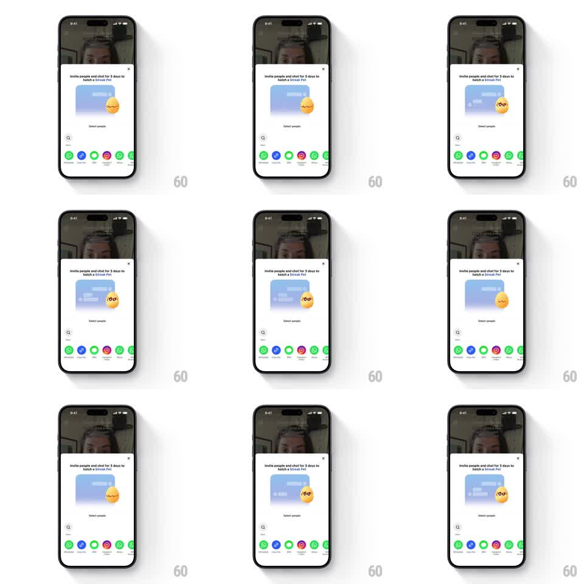

Media
Frame-by-frame

Rebuild this animation 1:1: TikTok's streak pet sheet - inside the "Invite people and chat for 3 days to hatch a Streak Pet" sheet, the yellow egg cracks open, a round chick pet pops out, and idles with wiggles, blinks, and happy squints.

Rebuild this animation 1:1: TikTok's streak pet sheet - inside the "Invite people and chat for 3 days to hatch a Streak Pet" sheet, the yellow egg cracks open, a round chick pet pops out, and idles with wiggles, blinks, and happy squints. ## Integration Integration: stack-agnostic spec - springs given as stiffness/damping, timed motions as duration + curve; map every value to your framework and animation library of choice. ## Scene White bottom sheet over a dimmed video: title, a blue chat-bubble illustration with the egg beside it, a "Select people" search field, and a row of colorful share-target circles (WhatsApp, Messenger, and friends). The egg sits right of the bubble; the pet is a small round yellow chick with glasses-like eyes. ## Motion spec Pattern: idle character loop, ~2.4s cycle. - Crack: the egg wobbles (+-8deg, 3 cycles, 500ms), a crack line flashes, and the shell pops apart (150ms) as the chick springs out (scale 0.3 -> 1.1 -> 1, spring ~380/16). - Idle: the chick bobs (+-3px, 1.2s), wiggles side to side (+-5deg) every ~2s, and blinks (eyes to lines, 120ms) at random 2-4s intervals. - Happy: on a squint, the eyes become ^^ arcs and the chick does a quick double-hop (two 120ms hops, 6px). - Sheet: the sheet itself raised once with a standard spring (~320/24) before the egg sequence starts. ## Calibration - The idle loop runs indefinitely; crack-and-pop plays once per sheet open. - The chick never leaves its anchor beside the chat bubble. ## Reduced motion Egg crossfades to the chick (250ms); static idle pose. ## Don't miss - The wiggle is rotational around the bottom edge - the chick pivots, not translates. - Blink timing is irregular, not metronomic.